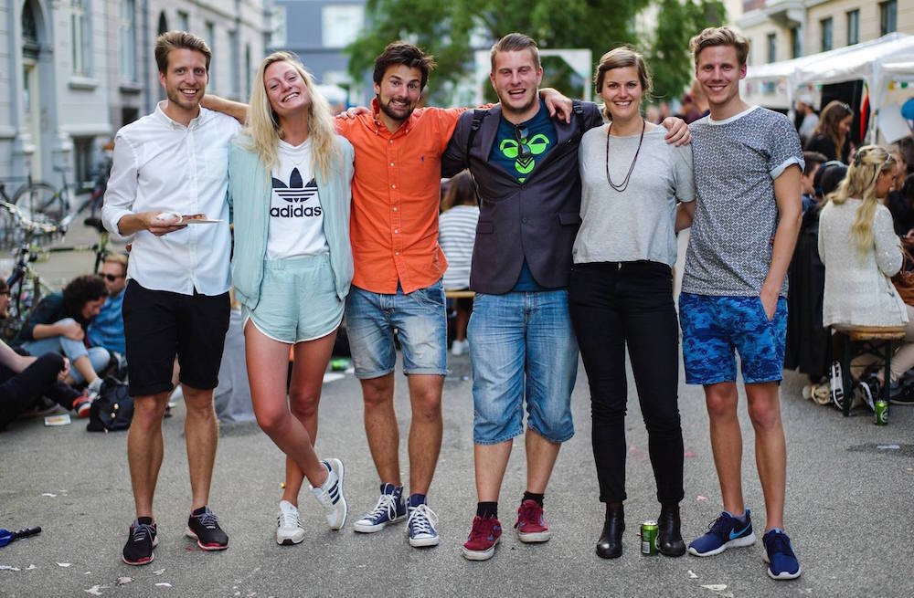

Vesterbro Ringridnings bestyrelse består af sønderjyske ildsjæle med et glimt i øjet.

- Jakob Jakobsen Boysen
Opvokset ved Nordborg. Jakob er uddannet softwareingeniør fra Danmarks Tekniske Universitet 2014, og arbejder ved Novo Nordisk.
- Sara Stricker
Opvokset i Bovrup. Sara studerer til sygeplejeske på Diakonissestiftelsens Sygeplejeskole, og er i sin sidste praktik på retspsykiatrisk afdeling på Sankt Hans Hospital.
- Christian Michelsen
Fra Lysabild på Als. Christian er i øjeblikket i gang med at færdiggøre sin ingeniøruddannelse i mekanik og konstruktion på Danmarks Tekniske Universitet.
- Philip Hansen Frank
Opvokset i Dybbøl. Philip studerer informationsvidenskab og kulturformidling på Københavns Universitet, og som studiejob arbejder han på Rigshospitalets arkiv.
- Anne Zachariassen
Opvokset på Vestermarken tæt på Felsted. Netop færdig med sin kandidat i Global Studies på Roskilde Universitet, og bor for tiden i Geneve.
- Morten Hulvej Andersen
Opvokset i Dyndved på Als. Morten er uddannet softwareingeniør fra Danmarks Tekniske Universitet 2013, og arbejder som ved e-conomic International.